# Load libraries
library(nimble)
library(HDInterval)
library(MCMCvis)
library(coda) # makes diagnostic plots
library(IDPmisc) # makes nice colored pairs plots to look at joint posteriors
library(matrixStats)
library(truncnorm)
##library(mcmcplots) # another option for diagnostic plots, currently unusedIntroduction to Bayesian Methods
Introduction
This section is focused on using the bayesTPC package to fit TPCs to data using the methods we’ve explored in the Bayesian lectures and the first two activities. Here we won’t be talking much about the implementation, but instead will rely on the bayesTPC package and it’s functions to allow us to specify, fit, and analyze the data.
Packages and tools
For this practical you will need to first install nimble, then be sure to install the following packages:
We are also introducing our new, in development, package bayesTPC. It is currently available through github.
#install.packages("devtools")
#devtools::install_github("johnwilliamsmithjr/bayesTPC")
library(bayesTPC)Aedes data revisited using Bayesian fitting
Now let’s do some Bayesian model fitting to Aedes thermal performance data. We will use the bayesTPC package that implements some of the standard TPC functions (e.g., quadratic, Briere) with truncated normal observation errors, reasonable default priors, and helper functions to make visualizing MCMC output and model predictions simpler.
First, we load the data:
set.seed(1234)
Aaeg.data <- read.csv("data/AeaegyptiTraitData.csv")The Data
These data are traits from Aedes aegypti mosquitoes measured across temperature in lab experiments. The traits we have data on thermal performance are:
- pEA: proportion surviving from egg to adulthood
- MDR: mosquito development rate
- PDR: parasite development rate (= 1/EIP the extrinsic incubation period)
- \mu (mu): death rate (here = 1/longevity)
Note that some of the traits come in multiple forms (e.g., \mu and 1/\mu, PDR and EIP, if we’re assuming lifespan and development time are exponentially distributed – a common modeling assumption).
As always, first we have a look at the data:
head(Aaeg.data) trait.name Temp trait ref trait2 trait2.name
1 pEA 22 0.90812 Westbrook_Thesis_2010 <NA> <NA>
2 pEA 27 0.93590 Westbrook_Thesis_2010 <NA> <NA>
3 pEA 32 0.81944 Westbrook_Thesis_2010 <NA> <NA>
4 MDR 22 0.09174 Westbrook_Thesis_2010 <NA> <NA>
5 MDR 27 0.13587 Westbrook_Thesis_2010 <NA> <NA>
6 MDR 32 0.15823 Westbrook_Thesis_2010 <NA> <NA>Now let’s pull a subset of the data related to mortality/survival:
mu.data <- subset(Aaeg.data, trait.name == "mu")
lf.data <- subset(Aaeg.data, trait.name == "1/mu")
par(mfrow=c(1,2), bty="l")
plot(trait ~ Temp, data = mu.data, ylab="mu")
plot(trait ~ Temp, data = lf.data, ylab="1/mu")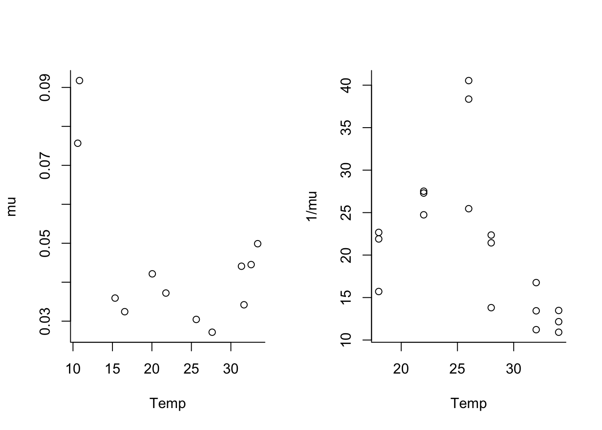
Note that the \mu data is u-shaped and the lifespan data is hump-shaped.
We could choose to fit this either way. Since thermal performance metrics are often assumed to be unimodal thermal responses, we will fit lifespan instead of \mu as our example. Thus, we’ll need to convert the \mu data to lifespan by taking the inverse. We will combine the data, by assuming that lifespan is 1/\mu (not usually a good idea, but we’re going to do it here so we have more data for the example).
mu.data.inv <- mu.data # make a copy of the mu data
mu.data.inv$trait <- 1/mu.data$trait # take the inverse of the trait values to convert mu to lifespan
lf.data.comb <- rbind(mu.data.inv, lf.data) # combine both lifespan data sets together
par(mfrow=c(1,1), bty="l")
plot(trait ~ Temp, data = lf.data.comb, ylab="1/mu",
ylim=c(0,40))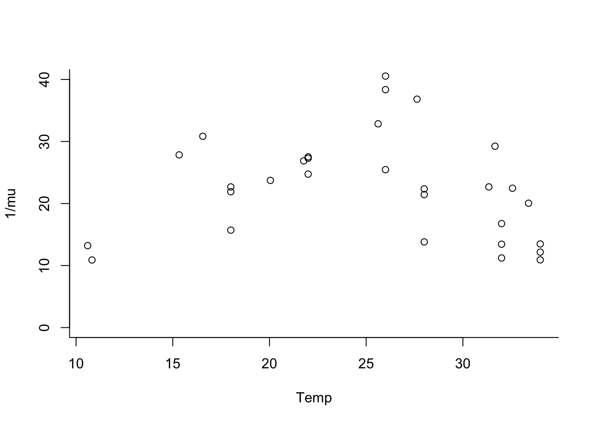
Two thermal performance curve models
Although there are many functional forms that can be used to describe TPCs, we’ll focus on two of the more common (and easy to fit) functions. Traits that respond unimodally but symmetrically to temperature (often the case for compound traits) can be fit with a quadratic function: f_1(T) = \begin{cases} 0 &\text {if } T \leq T_0 \\
-q (T-T_0) (T-T_m) & \text {if } T_0 < T <T_m \\
0 &\text{if } T \geq T_m \end{cases}
Traits that respond unimodally but asymetrically can be fited with a Briere function:
f_2(T) = \begin{cases} 0 &\text {if } T \leq T_0 \\
q T (T-T_0) \sqrt{T_m-T} & \text {if } T_0 < T <T_m \\
0 &\text{if } T \geq T_m \end{cases}
In both models, T_0 is the lower thermal limit, T_m is the upper thermal limit (i.e., where the trait value goes to zero on either end), and q>0 scales the height of the curve, (and so also the value of the trait at the optimum temperature). Note that above we’re assuming that the quadratic must be concave down (hence the negative sign), and that the performance goes to zero outside of the thermal limits.
Fitting with the bayesTPC package
Model and data specification
Unlike the previous Bayesian example, bayesTPC has a number of TPCs already implemented. We can view which TPC models are currently implemented:
get_models() [1] "poisson_glm_lin" "poisson_glm_quad" "binomial_glm_lin"
[4] "binomial_glm_quad" "bernoulli_glm_lin" "bernoulli_glm_quad"
[7] "briere" "gaussian" "kamykowski"
[10] "pawar_shsch" "quadratic" "ratkowsky"
[13] "stinner" "weibull" We can view the form of the implemented TPC using the get_formula function:
get_formula("quadratic")expression(-1 * q * (Temp - T_min) * (Temp - T_max) * (T_max >
Temp) * (Temp > T_min))Currently, the likelihood for all TPCs is by default is a normal distribution with a lower truncation at zero, and where the mean of the normal distribution is set to be the TPC (here a quadratic). The last piece of the Bayesian puzzle is the prior. You can see the default parameter names and their default priors using “get_default_priors”:
get_default_priors("quadratic") q T_max T_min sigma.sq
"dexp(1)" "dunif(25, 60)" "dunif(-10, 20)" "dexp(1)" As you can see, for the quadratic function, the default priors are specified via uniform distributions (the two arguments specific the lower and upper bounds, respectively). For the quadratic (and the Briere), the curvature parameter must be positive, and the priors need to be specified to ensure that T_{min}<T_{max}. Note that if you want to set a prior to a normal distribution, unlike in R and most other programs, in nimble (and thus bayesTPC) the inverse of the variance of the normal distribution is used, denoted by \tau = \frac{1}{\sigma^2}.
bayesTPC expects data to be in a named list with the “Trait” as the response and “Temp” as the predictor, that is:
lf.data.bTPC<-list(Trait = lf.data.comb$trait, Temp=lf.data.comb$Temp)The workhorse of the bayesTPC package is the b_TPC function. If you are happy to use the default priors, etc, the usage is simply:
library(bayesTPC)
library(nimble)
AedTestFit<- b_TPC(data = lf.data.bTPC, model = 'quadratic')Creating NIMBLE model:
- Configuring model. [Note] safeDeparse: truncating deparse output to 1 line - Compiling model.
Creating MCMC:
- Configuring MCMC.
- Compiling MCMC.
- Running MCMC.
Progress:
|-------------|-------------|-------------|-------------|
|-------------------------------------------------------|
Configuring Output:
- Finding Max. a Post. parameters.
We can examine the object that is saved. It includes the data, information on the priors, numbers of samples, and the samples themselves.
names(AedTestFit)[1] "samples" "mcmc" "data" "model_spec"
[5] "priors" "constants" "uncomp_model" "comp_model"
[9] "MAP_parameters"
We’ll mostly be using the samples:
dim(AedTestFit$samples) # number of samples then number of params[1] 10000 4head(AedTestFit$samples) # show first few sets of samplesMarkov Chain Monte Carlo (MCMC) output:
Start = 1
End = 7
Thinning interval = 1
T_max T_min q sigma.sq
[1,] 46.81828 15.94044 0.1560609 1.709173
[2,] 45.92824 15.94044 0.1560609 1.709173
[3,] 45.92824 15.94044 0.1560609 1.709173
[4,] 45.92824 15.94044 0.1560609 1.714180
[5,] 45.92824 15.94044 0.1184306 1.724040
[6,] 45.92824 13.73609 0.1184306 2.267213
[7,] 44.76062 11.55605 0.1184306 2.267213
Notice that the samples are of type MCMC, which means they’ve been formatted with the coda package (which bayesTPC uses for some of the plotting and diagnostics). Further, by default we take 10000 samples, no burnin, using a random walk sampler.
But we may also want to check what model we fit and the priors that were set:
AedTestFit$model_typeNULLAedTestFit$priors q T_max T_min sigma.sq
"dexp(1)" "dunif(25, 60)" "dunif(-10, 20)" "dexp(1)" MCMC diagnostics
We’ll show you a few different ways to examine the output. View the summary of parameters (only the first 5 lines, or it will also show you all of your derived quantities):
summary(AedTestFit$samples)
Iterations = 1:10000
Thinning interval = 1
Number of chains = 1
Sample size per chain = 10000
1. Empirical mean and standard deviation for each variable,
plus standard error of the mean:
Mean SD Naive SE Time-series SE
T_max 39.036 1.06585 0.0106585 0.105245
T_min 6.765 1.41244 0.0141244 0.122803
q 0.111 0.01684 0.0001684 0.002075
sigma.sq 18.214 2.63796 0.0263796 0.073980
2. Quantiles for each variable:
2.5% 25% 50% 75% 97.5%
T_max 37.25295 38.3347 38.9559 39.6153 41.3846
T_min 3.58434 5.9446 6.9135 7.7130 9.1137
q 0.07896 0.1003 0.1107 0.1213 0.1461
sigma.sq 13.54818 16.4654 18.0042 19.9085 23.6455
We can also assess this visually by plotting the chains of the three main TPC parameters and the standard devation of the normal observation model:
par(mfrow=c(2,2))
traceplot(AedTestFit)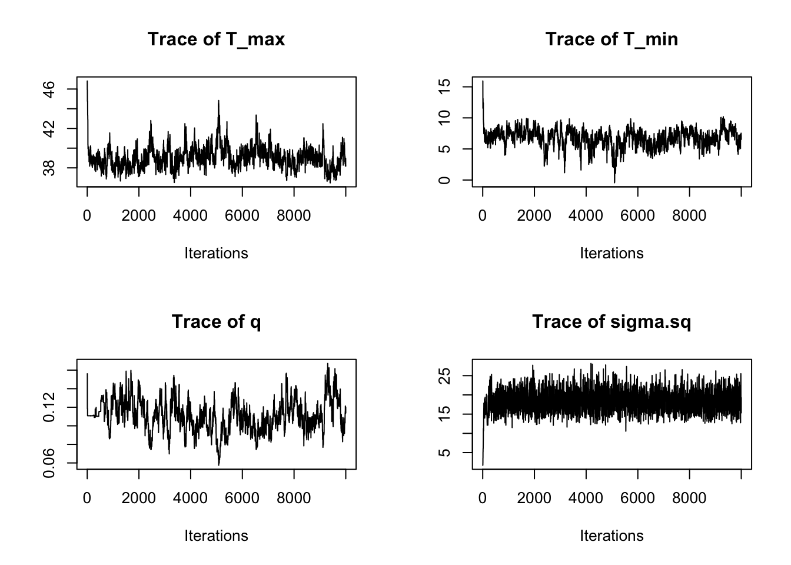
These all seem to be mixing alright, although we can see that we need to drop a bit of the burn-in.
We can examine the ACF of the chains as well (one for each parameter), similarly to a time series, to again check for autocorrelation within the chain (we want the autocorrelation to be fairly low):
s1<-as.data.frame(AedTestFit$samples)
par(mfrow=c(2,2))
for(i in 1:4) {
acf(s1[,i], lag.max=50, main="",
ylab = paste("ACF: ", names(s1)[i], sep=""))
}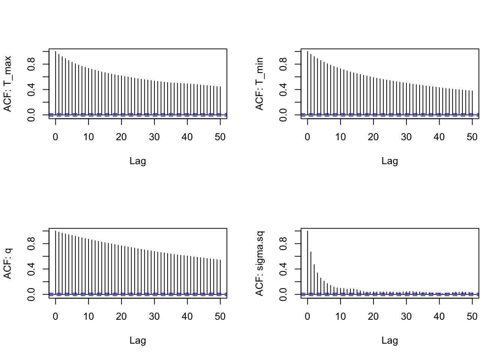
There is still a bit of autocorrelation, especially for the 3 quadratic parameters, but it isn’t too bad. The chain for \sigma is mixing best (the ACF falls off the most quickly). We could reduce the autocorrelation even further by thinning the chain (i.e., change the nt parameter to 5 or 10).
The last important diagnostic is to compare the prior and posterior distributions. Various packages in R have bespoke functions to do this. bayesTPC includes a built in function that creates posterior/prior overlap plots for all model parameters (note that the priors are smoothed because the algorithm uses kernel smoothing instead of the exact distribution).
ppo_plot(AedTestFit)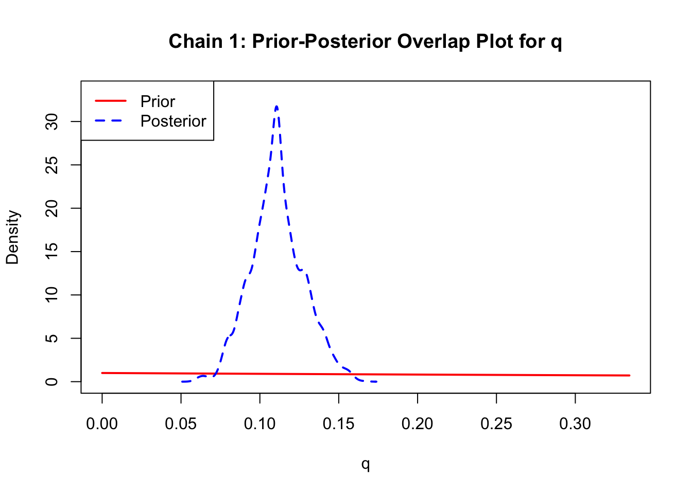
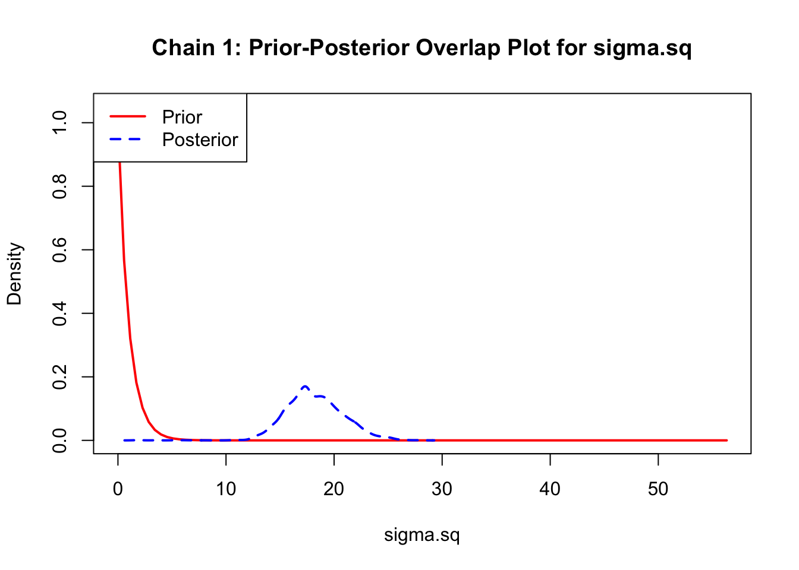
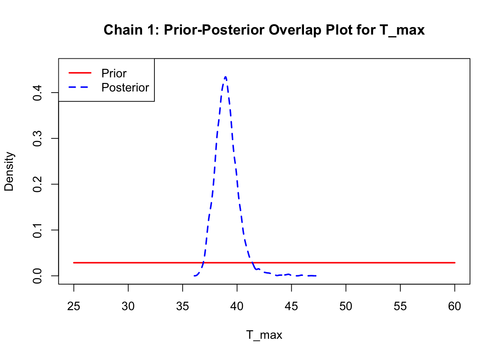

The prior distribution here is very different from the posterior. These data are highly informative for the parameters of interest and are very unlikely to be influenced much by the prior distribution (although you can always change the priors to check this). However, notice that the posteriors of T_m and T_0 are slightly truncated by their priors.
Visualizing the joint posterior of parameters
Now that we’ve confirmed that things are working well, it’s often useful to also look at the joint distribution of all of your parameters together. Of course, if you have a high dimensional posterior, rendering a 2-D representation can be difficult. Instead, the standard is to examine the pair-wise posterior distribution, for instance as follows:
#ipairs(AedTestFit)
ipairs(AedTestFit)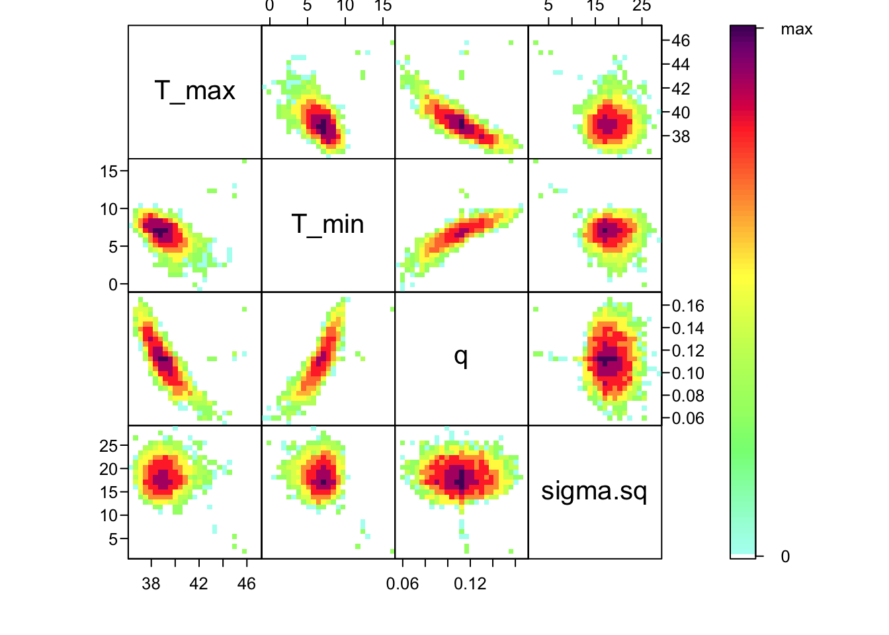
As you can see, estimates of T_0 and T_m are highly correlated with q– not surprising given the interplay between them in the quadratic function. This correlation is an important feature of the system, and we use the full posterior distribution that includes this correlation when we want to build the corresponding posterior distribution of the behavior of the quadratic function that we’ve fit.
Modifying the fitting routines
As we noted above, the bTPC function has a set of default specifications for multiple components for every type of implemented TPC. Many of these we can change. For example, above we noted that we can see that we need to drop samples for the burn-in. We might also want to change priors, or use an alternative sampler.
AedQuadFit <- b_TPC(data = lf.data.bTPC, ## data
model = 'quadratic', ## model to fit
niter = 11000, ## total iterations
burn = 1000, ## number of burn in samples
samplerType = 'AF_slice', ## slice sampler
priors = list(q = 'dunif(0, .5)',
sigma.sq = 'dexp(1)') ## priors
) Creating NIMBLE model:
- Configuring model. [Note] safeDeparse: truncating deparse output to 1 line - Compiling model.
Creating MCMC:
- Configuring MCMC.
- Compiling MCMC.
- Running MCMC.
Progress:
|-------------|-------------|-------------|-------------|
|-------------------------------------------------------|
Configuring Output:
- Finding Max. a Post. parameters.
Let’s take a look at the output in this case:
summary(AedQuadFit$samples)
Iterations = 1:10000
Thinning interval = 1
Number of chains = 1
Sample size per chain = 10000
1. Empirical mean and standard deviation for each variable,
plus standard error of the mean:
Mean SD Naive SE Time-series SE
T_max 38.8635 1.02984 0.0102984 0.0171717
T_min 6.9431 1.31368 0.0131368 0.0228201
q 0.1139 0.01728 0.0001728 0.0002788
sigma.sq 18.3472 2.66898 0.0266898 0.0349062
2. Quantiles for each variable:
2.5% 25% 50% 75% 97.5%
T_max 37.15271 38.1332 38.7686 39.4728 41.1759
T_min 3.96365 6.1694 7.0591 7.8705 9.1318
q 0.07996 0.1022 0.1133 0.1256 0.1481
sigma.sq 13.74818 16.4704 18.1355 19.9688 24.1041
We again plot the chains of the three main TPC parameters and the standard deviation of the normal observation model:
## plot(lf.fit.mcmc[,c(1,3,4)]) ## default coda plot
par(mfrow=c(2,2))
traceplot(AedQuadFit)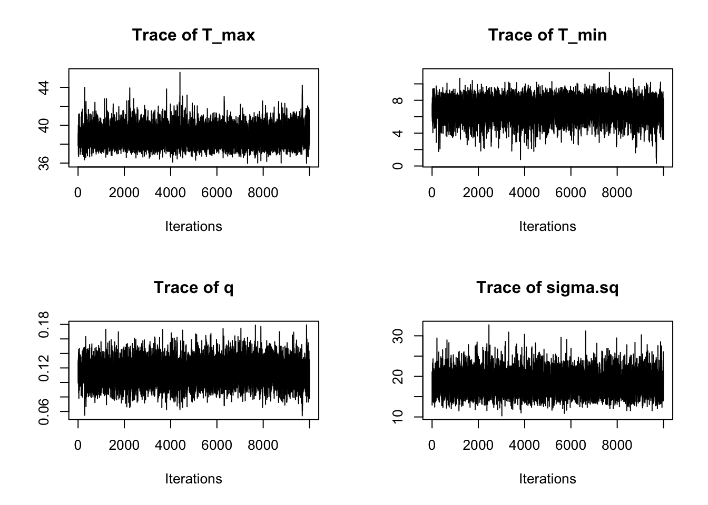
These all seem to be mixing well, better that the first time, although we can see that we need to drop a bit of the burn-in.
We again look at ACF of the chains as well (one for each parameter):
s1<-as.data.frame(AedQuadFit$samples)
par(mfrow=c(2,2))
for(i in 1:4) acf(s1[,i], lag.max=50, main="", ylab = paste("ACF: ", names(s1)[i], sep=""))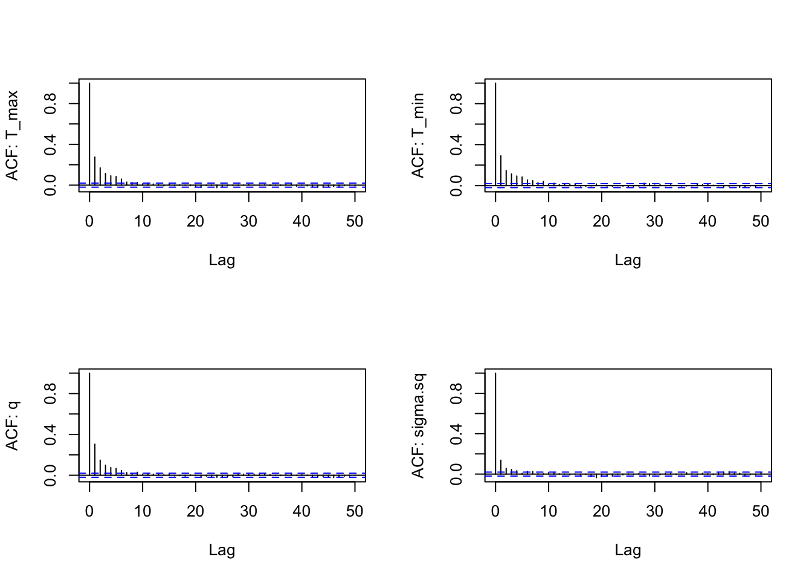
Notice this falls off much more quickly – the samples from the slice filter in this case are less autocorrelated than the default random walk (“RW”) filter.
And comparing the new priors to the posteriors:
ppo_plot(AedQuadFit, burn = 1000)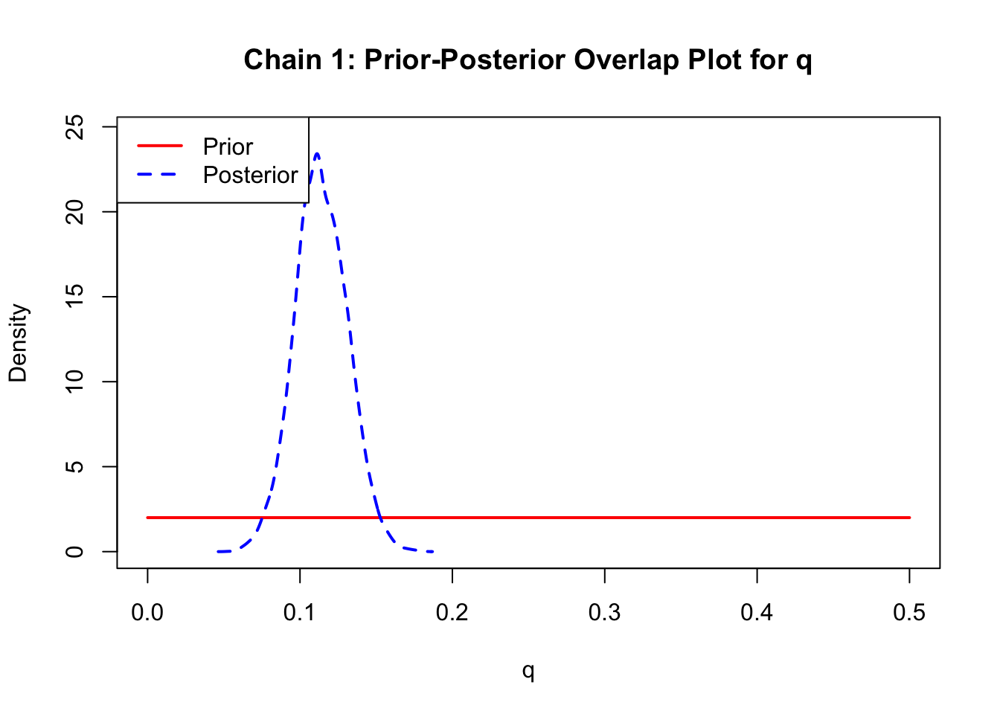
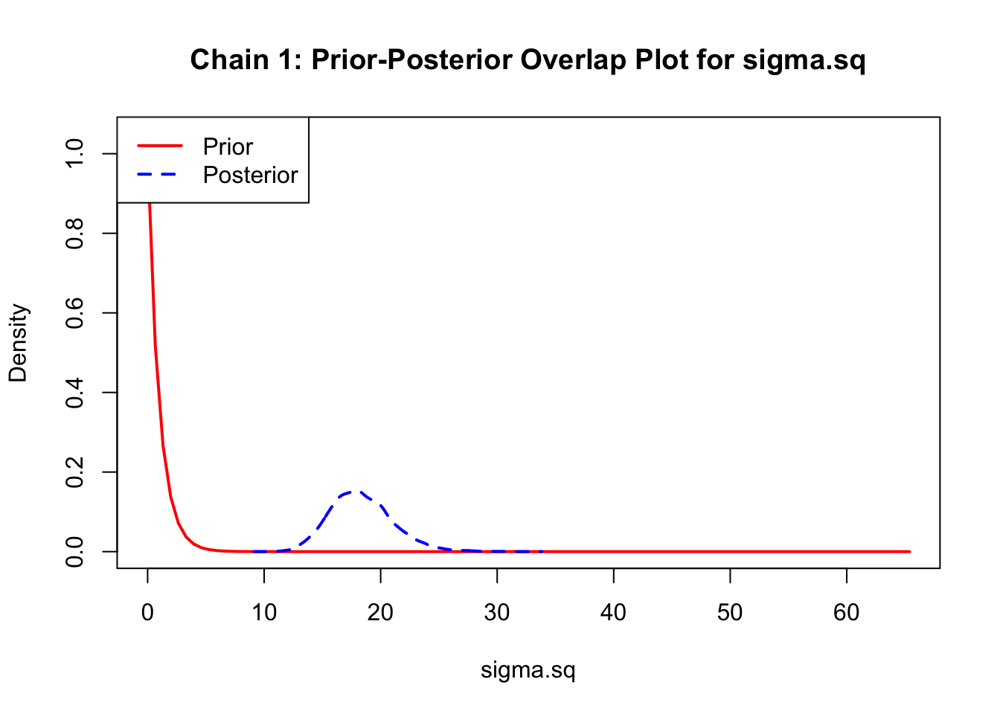
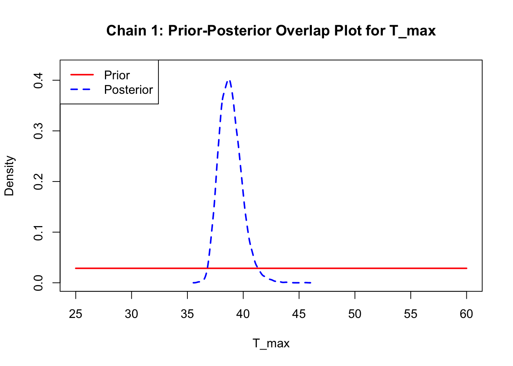
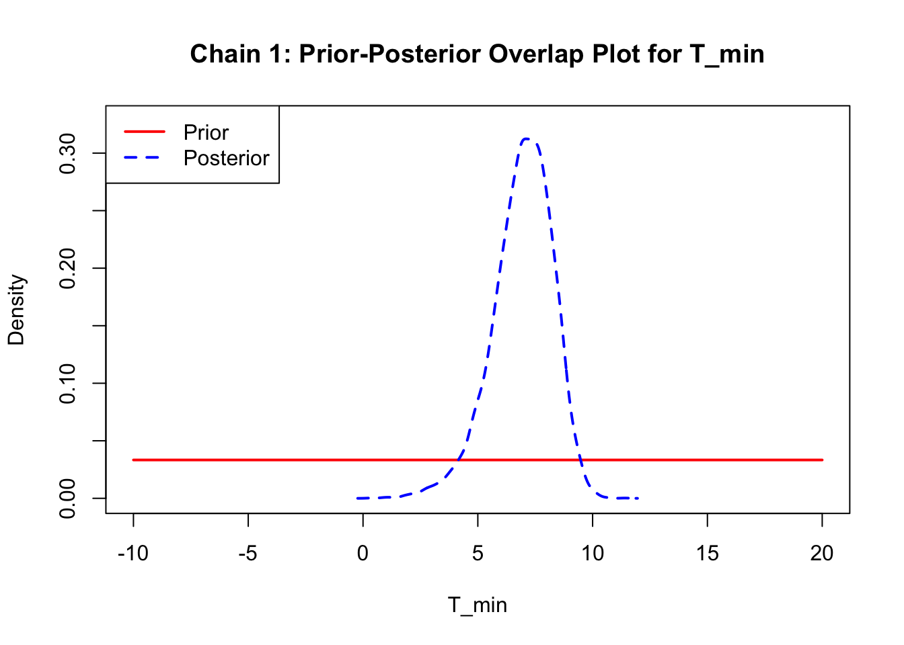
Let’s also fit the Briere function to the data, just to see how it does:
AedBriFit <- b_TPC(data = lf.data.bTPC, ## data
model = 'briere', ## model to fit
niter = 11000, ## total iterations
burn = 1000, ## number of burn in samples
samplerType = 'AF_slice', ## slice sampler
priors = list(T_min = "dunif(5,10)",
T_max = "dunif(18,35)",
sigma.sq = 'dexp(1)') ## priors
) Creating NIMBLE model:
- Configuring model. [Note] safeDeparse: truncating deparse output to 1 line - Compiling model.
Creating MCMC:
- Configuring MCMC.
- Compiling MCMC.
- Running MCMC.
Progress:
|-------------|-------------|-------------|-------------|
|-------------------------------------------------------|
Configuring Output:
- Finding Max. a Post. parameters.summary(AedBriFit$samples)
Iterations = 1:10000
Thinning interval = 1
Number of chains = 1
Sample size per chain = 10000
1. Empirical mean and standard deviation for each variable,
plus standard error of the mean:
Mean SD Naive SE Time-series SE
T_max 34.29541 0.1776595 1.777e-03 2.191e-03
T_min 5.48960 0.4685661 4.686e-03 7.860e-03
q 0.01913 0.0009885 9.885e-06 1.181e-05
sigma.sq 24.62955 3.1544841 3.154e-02 4.240e-02
2. Quantiles for each variable:
2.5% 25% 50% 75% 97.5%
T_max 34.03217 34.18925 34.2828 34.39527 34.66184
T_min 5.01366 5.14286 5.3496 5.68883 6.72048
q 0.01734 0.01846 0.0191 0.01975 0.02124
sigma.sq 19.01469 22.44509 24.4139 26.61377 31.38610We again plot the chains of the three main TPC parameters and the standard deviation of the normal observation model:
## plot(lf.fit.mcmc[,c(1,3,4)]) ## default coda plot
par(mfrow=c(2,2))
traceplot(AedBriFit, burn=1000)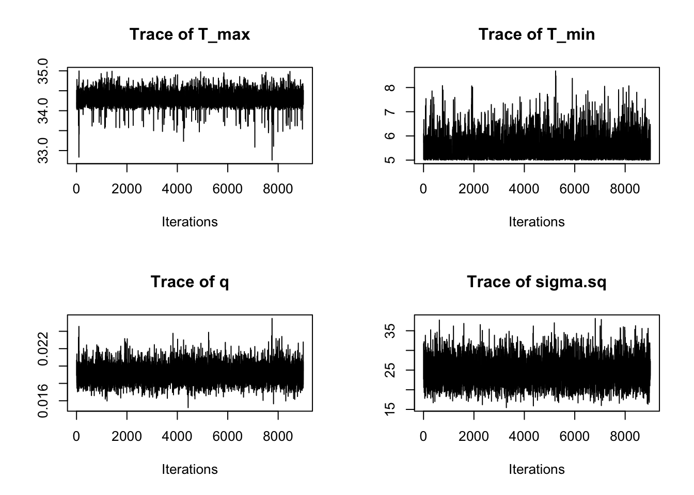
Overall very good mixing, but we can see our choice of priors wasn’t ideal.
We again look at ACF of the chains as well (one for each parameter):
s2<-as.data.frame(AedBriFit$samples[1000:10000,])
par(mfrow=c(2,2))
for(i in 1:4) {
acf(s2[,i], lag.max=50, main="",
ylab = paste("ACF: ", names(s2)[i], sep=""))
}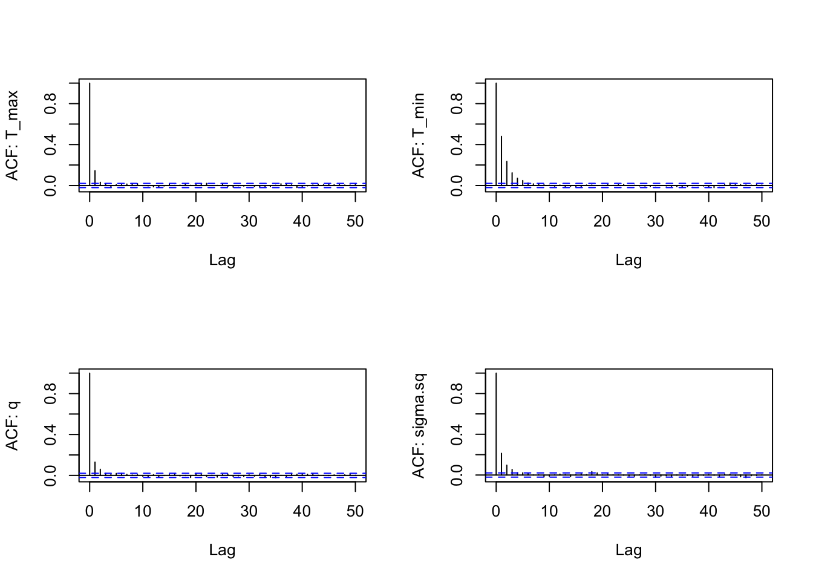
This is great! Finally comparing the new priors to the posteriors:
ppo_plot(AedBriFit, burn = 1000)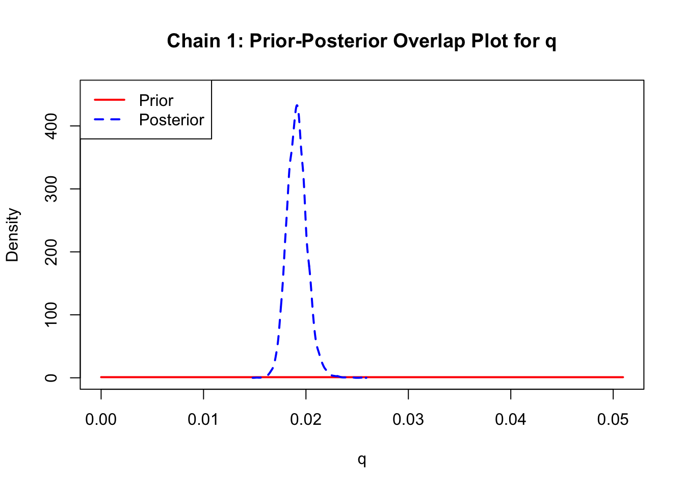
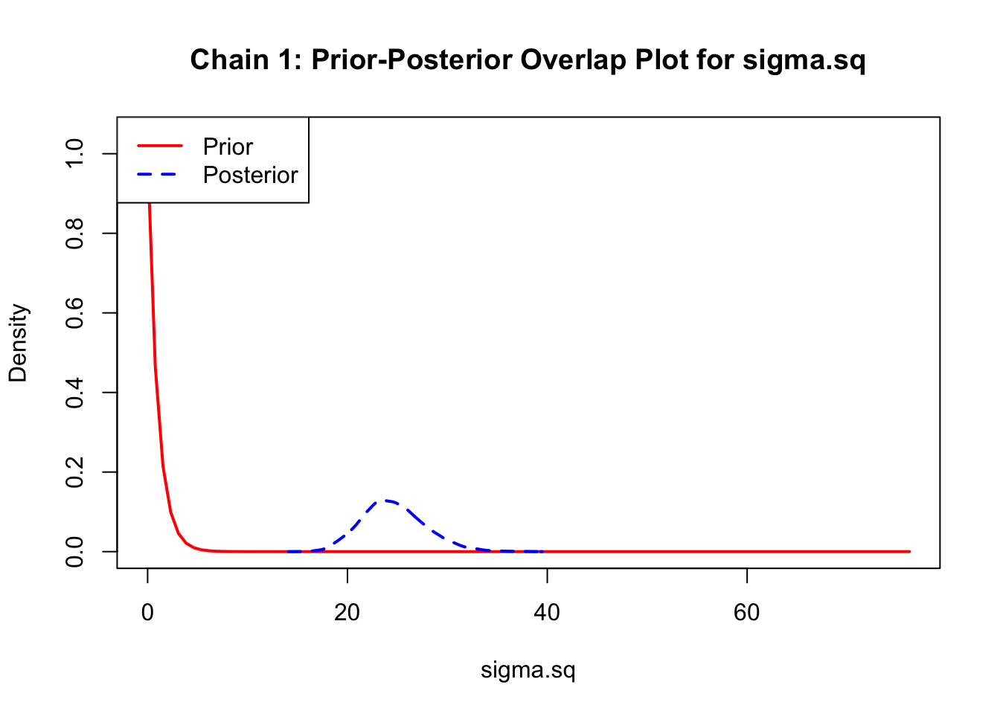
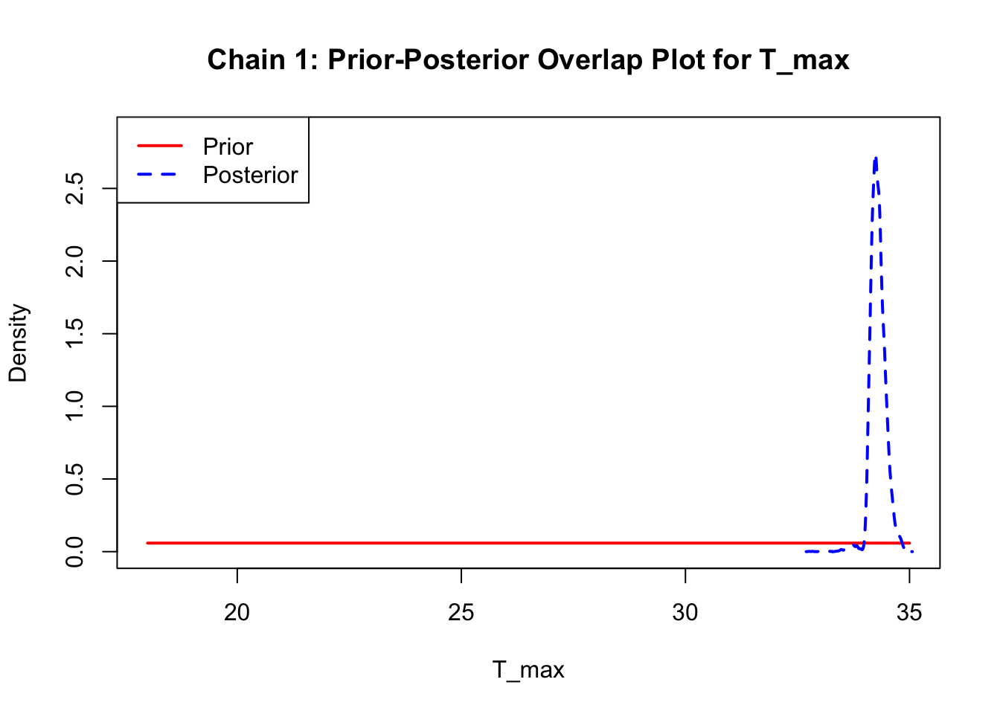
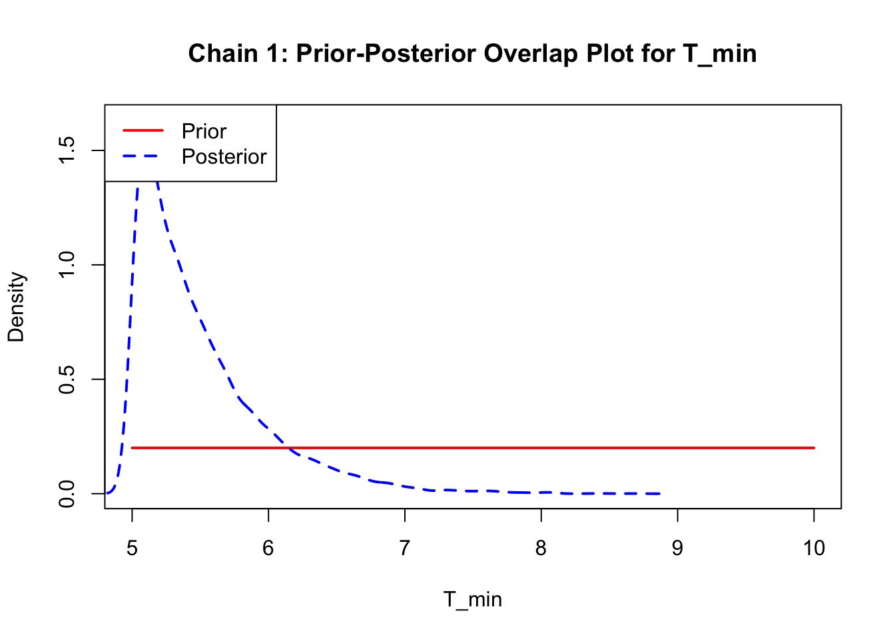
Now we look at the joint posterior.
ipairs(AedBriFit, burn=1000)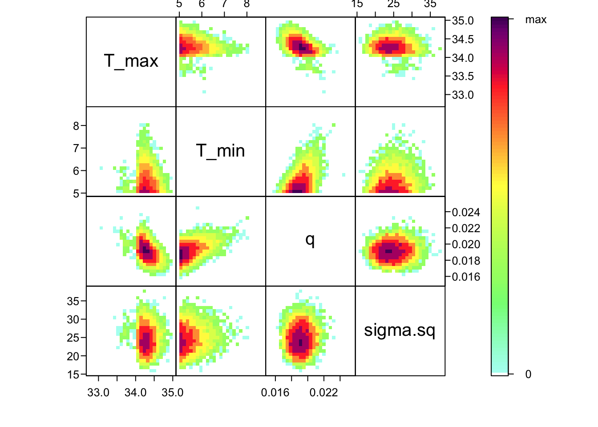
Finally, what if we wanted to fit a model not included in bayesTPC?
Let’s look at how the package defines the Briere model.
get_default_model_specification("briere")bayesTPC Model Specification of Type:
briere
Model Formula:
m[i] <- ( q * Temp * (Temp - T_min) * sqrt((T_max > Temp) * abs(T_max - Temp))
* (T_max > Temp) * (Temp > T_min) )
Model Distribution:
Trait[i] ~ T(dnorm(mean = m[i], tau = 1/sigma.sq), 0, )
Model Parameters and Priors:
q ~ dexp(1)
T_max ~ dunif(25, 60)
T_min ~ dunif(0, 20)
sigma.sq ~ dexp(1)
For our model, we will choose an alternate Briere formula, changing the square root to a cube root.
f_2(T) = \begin{cases} 0 &\text{if } T \leq T_0 \\ q T (T-T_0) \sqrt[3]{T_m-T} & \text{if } T_0 < T <T_m \\ 0 &\text{if } T \geq T_m \end{cases}
my_briere_formula <- expression(q * (Temp - T_min) * ((T_max > Temp) * abs(T_max - Temp))^(1/3) * (T_max > Temp) * (Temp > T_min))
Now, we choose the priors we want to sample from. We’ll include a little more flexibility here to ensure the model fits how we want it to.
my_briere_priors <- c(
q = "dunif(0,1)",
T_max = "dunif(20,45)",
T_min = "dunif(-5,10)")
Since we have no constants we need to add, that’s all the information we need! We can use specify_normal_model() to create a model object we can train.
my_briere <- specify_normal_model("my_briere", #model name
parameters = my_briere_priors, #names are parameters, values are priors
formula = my_briere_formula
)Model type 'my_briere' can now be accessed using other bayesTPC functions. Use `reset_models()` to reset back to defaults.
Now we can use this model just like any other.
get_formula("my_briere")expression(q * (Temp - T_min) * ((T_max > Temp) * abs(T_max -
Temp))^(1/3) * (T_max > Temp) * (Temp > T_min))get_default_priors("my_briere") q T_max T_min sigma.sq
"dunif(0,1)" "dunif(20,45)" "dunif(-5,10)" "dexp(1)"
We can also pass the model object in, instead of just the name. configure_model() returns the BUGS model that will be trained.
cat(configure_model(my_briere)){
for (i in 1:N){
m[i] <- ( q * (Temp[i] - T_min) * ((T_max > Temp[i]) * abs(T_max - Temp[i]))^(1/3) * (T_max > Temp[i]) * (Temp[i] > T_min) )
Trait[i] ~ T(dnorm(mean = m[i], tau = 1/sigma.sq), 0, )
}
q ~ dunif(0,1)
T_max ~ dunif(20,45)
T_min ~ dunif(-5,10)
sigma.sq ~ dexp(1)
}
Now, let’s train our Briere model.
AedMyBriFit <- b_TPC(data = lf.data.bTPC, ## data
model = 'my_briere', ## model to fit
niter = 11000, ## total iterations
burn = 1000, ## number of burn in samples
samplerType = 'AF_slice', ## slice sampler
priors = list(sigma.sq = 'dexp(1)') ## priors
) Creating NIMBLE model:
- Configuring model. [Note] safeDeparse: truncating deparse output to 1 line - Compiling model.
Creating MCMC:
- Configuring MCMC.
- Compiling MCMC.
- Running MCMC.
Progress:
|-------------|-------------|-------------|-------------|
|-------------------------------------------------------|
Configuring Output:
- Finding Max. a Post. parameters.
Finally, we can run the same diagnostics as before.
par(mfrow=c(2,2))
traceplot(AedMyBriFit, burn=1000)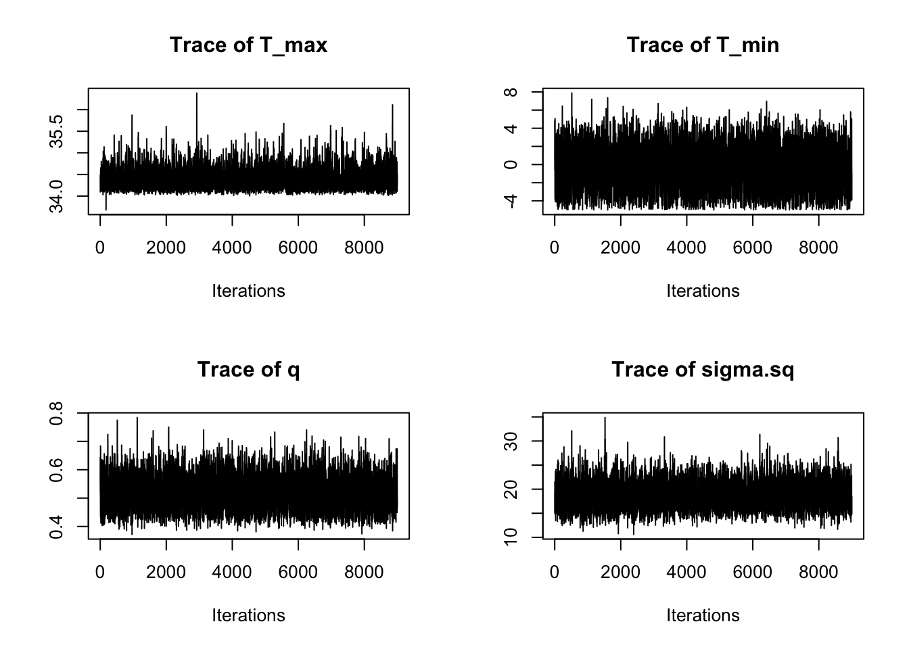
Looks like the mixing went well again. How about ACF?
s3<-as.data.frame(AedMyBriFit$samples[1000:10000,])
par(mfrow=c(2,2))
for(i in 1:4) {
acf(s3[,i], lag.max=50, main="",
ylab = paste("ACF: ", names(s3)[i], sep=""))
}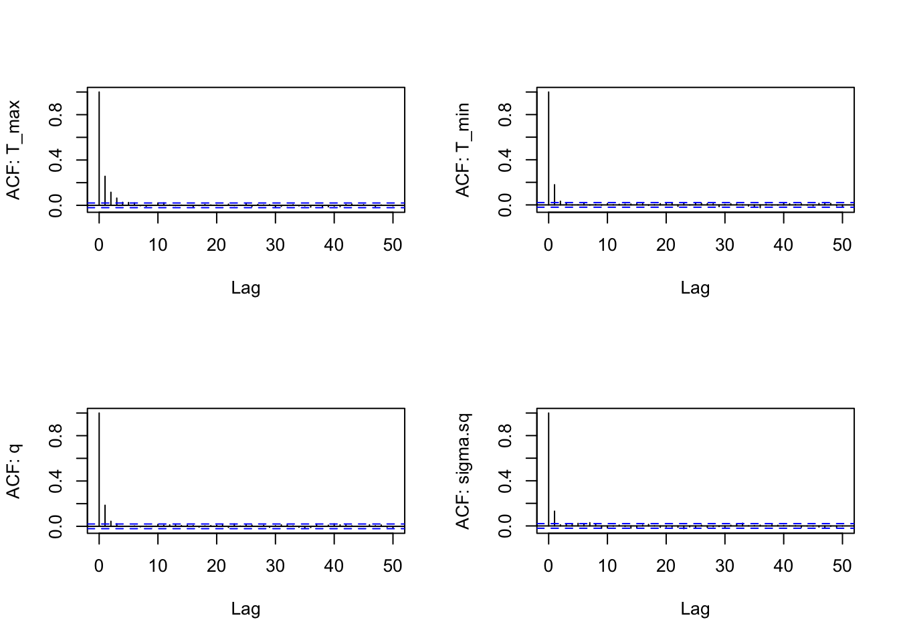
Good! Finally, let’s look at our posterior distributions and see how well we fit the data.
ppo_plot(AedMyBriFit)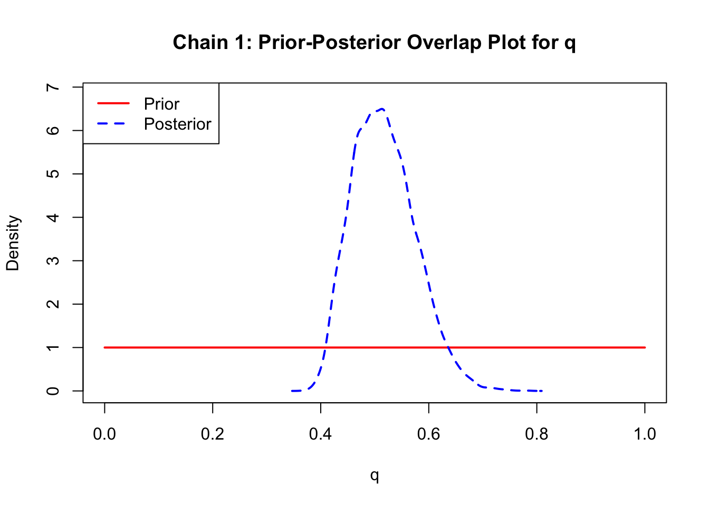
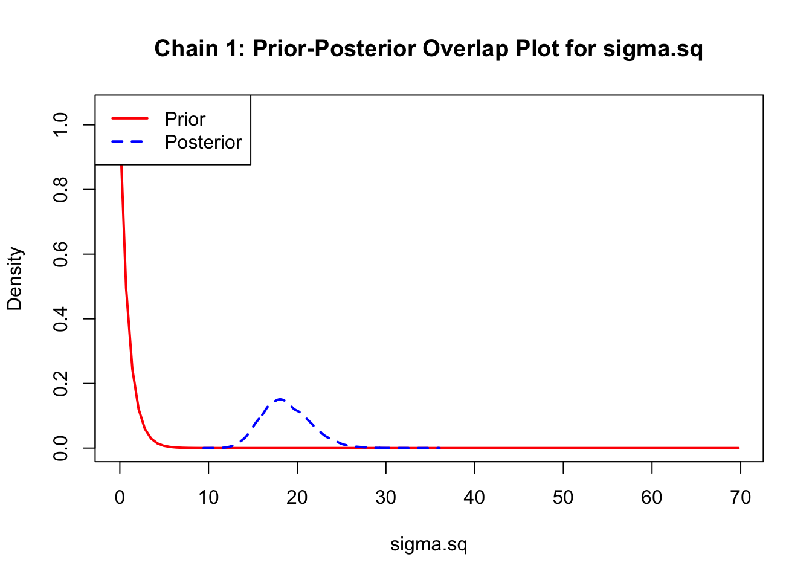
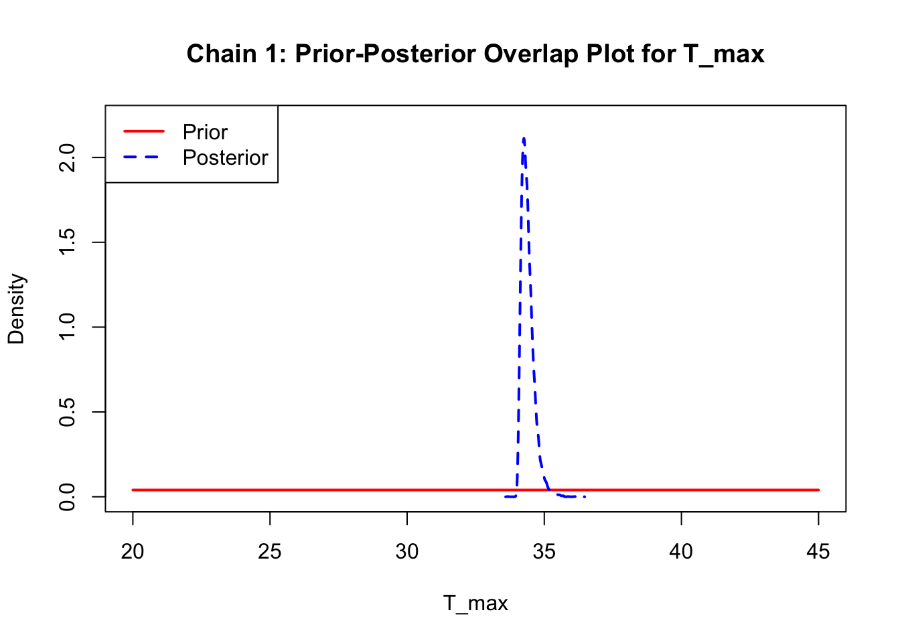
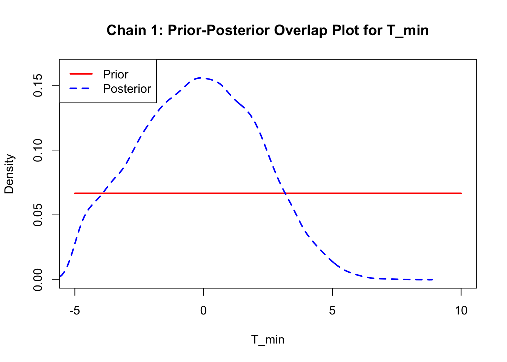
ipairs(AedMyBriFit, burn = 1000)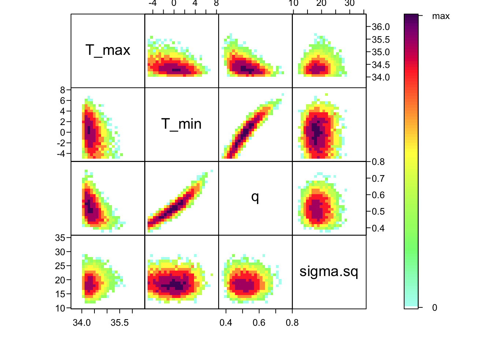
Model Selection
coda lets us pull the Watanabe–Akaike information criterion (WAIC) from the models we’ve fit. We’re currently working on providing more model selection methods in bayesTPC.
AedTestFit$mcmc$getWAIC() [Warning] There are 23 individual pWAIC values that are greater than 0.4. This may indicate that the WAIC estimate is unstable (Vehtari et al., 2017), at least in cases without grouping of data nodes or multivariate data nodes.nimbleList object of type waicNimbleList
Field "WAIC":
[1] 481.6788
Field "lppd":
[1] -100.6722
Field "pWAIC":
[1] 140.1672AedQuadFit$mcmc$getWAIC() [Warning] There are 6 individual pWAIC values that are greater than 0.4. This may indicate that the WAIC estimate is unstable (Vehtari et al., 2017), at least in cases without grouping of data nodes or multivariate data nodes.nimbleList object of type waicNimbleList
Field "WAIC":
[1] 212.8589
Field "lppd":
[1] -100.5861
Field "pWAIC":
[1] 5.843352AedBriFit$mcmc$getWAIC() [Warning] There are 4 individual pWAIC values that are greater than 0.4. This may indicate that the WAIC estimate is unstable (Vehtari et al., 2017), at least in cases without grouping of data nodes or multivariate data nodes.nimbleList object of type waicNimbleList
Field "WAIC":
[1] 231.3994
Field "lppd":
[1] -110.6739
Field "pWAIC":
[1] 5.025814AedMyBriFit$mcmc$getWAIC() [Warning] There are 4 individual pWAIC values that are greater than 0.4. This may indicate that the WAIC estimate is unstable (Vehtari et al., 2017), at least in cases without grouping of data nodes or multivariate data nodes.nimbleList object of type waicNimbleList
Field "WAIC":
[1] 213.6941
Field "lppd":
[1] -101.5337
Field "pWAIC":
[1] 5.313368
It looks like the default Briere model performed ever so slightly better, but the values are similar enough.
Plot the fits
First extract the fits/predictions using the bayesTPC_summary function and use the tidyverse to save the model predictions as a tibble. We can then use ggplot to generate a pretty plot of our TPC with prediction bounds
# library(tidyverse)
# briere_fit <- as_tibble(bayesTPCsummary(AedMyBriFit, plot = FALSE))
# head(briere_fit)
# Load required packages
library(bayesTPC)
library(tidyverse)
summary_result <- summary(AedMyBriFit)bayesTPC MCMC of Type:
my_briere
Formula:
m[i] <- ( q * (Temp - T_min) * ((T_max > Temp) * abs(T_max - Temp))^(1/3) *
(T_max > Temp) * (Temp > T_min) )
Distribution:
Trait[i] ~ T(dnorm(mean = m[i], tau = 1/sigma.sq), 0, )
Priors:
q ~ dunif(0,1)
T_max ~ dunif(20,45)
T_min ~ dunif(-5,10)
sigma.sq ~ dexp(1)
Max. A Post. Parameters:
T_max T_min q sigma.sq log_prob
34.2754 0.5940 0.5333 17.6303 -126.6395
MCMC Results:
Iterations = 1:10000
Thinning interval = 1
Number of chains = 1
Sample size per chain = 10000
1. Empirical mean and standard deviation for each variable,
plus standard error of the mean:
Mean SD Naive SE Time-series SE
T_max 34.3985 0.23526 0.0023526 0.0033228
T_min -0.2150 2.32218 0.0232218 0.0276840
q 0.5173 0.05824 0.0005824 0.0007021
sigma.sq 18.7481 2.71916 0.0271916 0.0325633
2. Quantiles for each variable:
2.5% 25% 50% 75% 97.5%
T_max 34.0875 34.2301 34.3528 34.5131 34.9839
T_min -4.5416 -1.9386 -0.1931 1.4825 4.2315
q 0.4198 0.4733 0.5133 0.5553 0.6412
sigma.sq 14.0180 16.8163 18.5158 20.4793 24.5147briere_df <- as_tibble(summary_result$statistics, rownames = "Parameter")
summary_result <- summary(AedMyBriFit)bayesTPC MCMC of Type:
my_briere
Formula:
m[i] <- ( q * (Temp - T_min) * ((T_max > Temp) * abs(T_max - Temp))^(1/3) *
(T_max > Temp) * (Temp > T_min) )
Distribution:
Trait[i] ~ T(dnorm(mean = m[i], tau = 1/sigma.sq), 0, )
Priors:
q ~ dunif(0,1)
T_max ~ dunif(20,45)
T_min ~ dunif(-5,10)
sigma.sq ~ dexp(1)
Max. A Post. Parameters:
T_max T_min q sigma.sq log_prob
34.2754 0.5940 0.5333 17.6303 -126.6395
MCMC Results:
Iterations = 1:10000
Thinning interval = 1
Number of chains = 1
Sample size per chain = 10000
1. Empirical mean and standard deviation for each variable,
plus standard error of the mean:
Mean SD Naive SE Time-series SE
T_max 34.3985 0.23526 0.0023526 0.0033228
T_min -0.2150 2.32218 0.0232218 0.0276840
q 0.5173 0.05824 0.0005824 0.0007021
sigma.sq 18.7481 2.71916 0.0271916 0.0325633
2. Quantiles for each variable:
2.5% 25% 50% 75% 97.5%
T_max 34.0875 34.2301 34.3528 34.5131 34.9839
T_min -4.5416 -1.9386 -0.1931 1.4825 4.2315
q 0.4198 0.4733 0.5133 0.5553 0.6412
sigma.sq 14.0180 16.8163 18.5158 20.4793 24.5147briere_fit <- as_tibble(summary_result$statistics, rownames = "Parameter")params <- MAP_estimate(AedMyBriFit)
temp_seq <- seq(5, 45, by = 0.2)
# Define the Brière function
briere_model <- function(T, q, T_min, T_max) {
out <- q * (T - T_min) * ((T_max > T) * abs(T_max - T))^(1/3)
out[(T < T_min) | (T > T_max)] <- 0
return(out)
}
# Apply using your MAP estimates
pred_values <- briere_model(temp_seq,
q = params["q"],
T_min = params["T_min"],
T_max = params["T_max"])
briere_fit <- tibble(Temperature = temp_seq,
Prediction = pred_values)
ggplot(briere_fit) +
geom_line(aes(Temperature, Prediction), linewidth = 0.4) +
theme_bw() +
geom_point(data = lf.data.comb, aes(Temp, trait),
shape = 21, fill = '#C0C0C0', col = '#000000',
alpha = 0.8, stroke = 0.5, size = 2) +
theme(text = element_text(size = 12),
legend.position = 'none',
axis.title.y = element_text(size = 12),
axis.title.x = element_text(size = 12),
panel.grid.major = element_blank(),
panel.grid.minor = element_blank()) +
scale_y_continuous(expression(plain(paste("lifespan (days)")))) +
labs(x = expression(plain(paste("Temperature, ", degree, "C"))))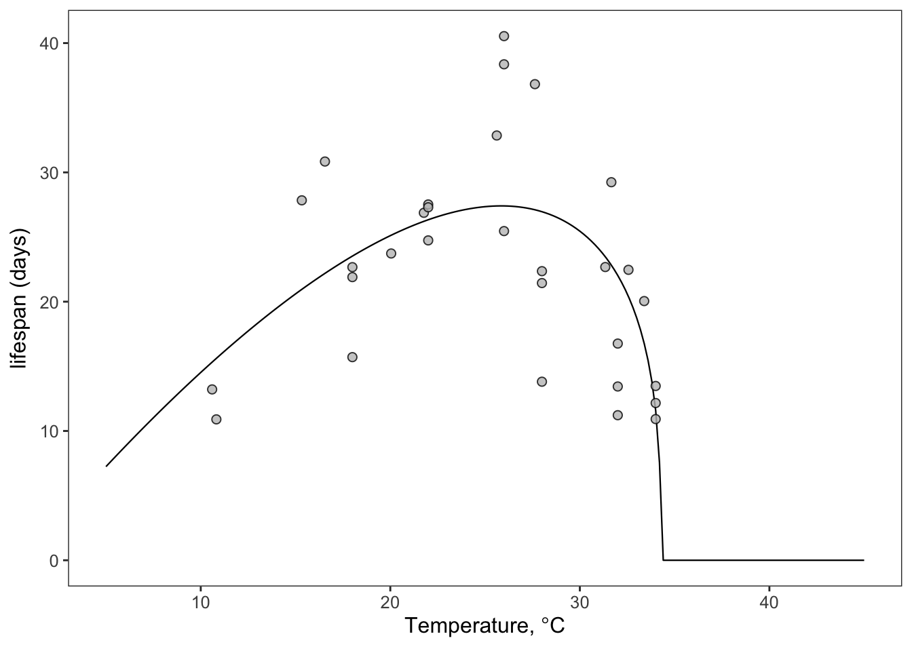
We can also use the built in function, posteriorPredTPC(), to plot the median and lower/upper bounds from samples taken from the posterior distribution.
posterior_predictive(AedMyBriFit)Finally we can plot the fits/predictions. These are the posterior estimates of the fitted lines to the data. Recall that we can take each accepted sample, and plug it into the quadratic equations. This gives us the same number of possible lines as samples. We can then summarize these with the HPD intervals across each temperature. This is especially easy in this case because we’ve already saved these samples as output in our model file:
Additional analyses
Once you have all of these samples, you can do many other things. For example, you can use the which.max() function to find the peak temperature (T_{pk}) for adult lifespan and its value at T_{pk}:
lifespan_Tpk <- briere_fit %>% slice(which.max(Prediction))
T_pk <- lifespan_Tpk$Temperature
max_lifespan <- lifespan_Tpk$Prediction
You can then plot T_{pk} and the trait value at T_{pk}:
ggplot(briere_fit) +
geom_line(aes(Temperature, Prediction), linewidth = 0.4) +
theme_bw() +
geom_point(data = lf.data.comb, aes(Temp, trait),
shape = 21, fill = '#C0C0C0', col = '#000000',
alpha = 0.8, stroke = 0.5, size = 2) +
geom_point(data = lifespan_Tpk, aes(Temperature, Prediction),
shape = 23, fill = 'yellow', col = '#000000',
alpha = 0.8, stroke = 0.5, size = 3) +
theme(text = element_text(size = 12),
legend.position = 'none',
axis.title.y = element_text(size = 12),
axis.title.x = element_text(size = 12),
panel.grid.major = element_blank(),
panel.grid.minor = element_blank()) +
scale_y_continuous(expression(plain(paste("lifespan (days)")))) +
labs(x = expression(plain(paste("Temperature, ", degree, "C"))))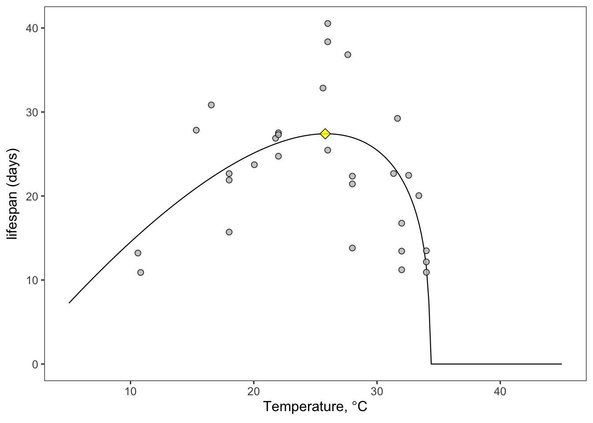
This suggests that the optimal temperature for adult lifespan in Aedes aegypti is 25.8 degrees Celsius! Can you now figure out how to get the credible intervals for T_{pk} and the trait value at T_{pk}?
Other Aedes aegypti traits (Independent Practice)
In addition to lifespan/mortality rate for Aedes aegypti, this file we used also includes PDR/EIP data. You can also download some other trait data from the VectorByte – VecTraits Databases
Write you own analysis as an independent, self-sufficient R script that produces all the plots in a reproducible workflow when sourced. You may need to use a Briere function instead of quadratic.